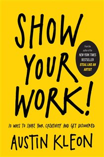

Library › Creativity
Show Your Work! — Summary & Key Lessons

10 ways to share your creativity and get discovered — self-promotion for people who hate self-promotion.
📖 OPEN THE FULL INTERACTIVE BREAKDOWN →🌐 Read it in Hindi, Hinglish, Gujarati, Tamil & 22 more languages — free, with audio.
💡 The Big Idea
The sequel-in-spirit to Steal Like an Artist flips the discovery problem: instead of networking your way to an audience, work in public and let the audience find YOU. Kleon's ten rules form a gentle system: reject the lone-genius myth for 'scenius' (great work comes from ecosystems — be a generous node); think process, not product (the making — sketches, drafts, tools, failures — is content people love); share something small every day (the compound interest of visibility); open your cabinet of curiosities (your taste and influences are shareable value); tell good stories (work doesn't speak for itself); teach what you know (teaching multiplies rather than subtracts); avoid becoming 'human spam' (share generously, don't just broadcast); learn to take a punch; sell out without shame (audiences understand creators need to eat); and stick around — persistence is where all the compounding happens.
🧠 The 5 Key Lessons
Lesson 1: Scenius: You Don't Have to Be a Genius
Chapter 1: You Don't Have to Be a Genius
The lone-genius myth is both false and paralyzing — it says talent is innate, arrives fully formed, and belongs to others. Brian Eno's counter-concept, SCENIUS, relocates creativity in ecosystems: great work emerges from scenes — networks of peers trading ideas, encouragement, and honest theft (the Impressionists' cafés, the Beatles' Hamburg, early hip-hop's block parties). The liberating consequence: you don't need to be brilliant to contribute; you need to be a NODE — sharing what you learn, connecting people, amplifying others. And the internet made every scene joinable from anywhere: the price of admission isn't credentials but generosity. Kleon's companion move is embracing amateurism: amateurs ('lovers' by etymology) out-experiment professionals because they have nothing to lose — and today's beginner documenting the journey is more followable than the master whose steps are invisible. Find your scene, contribute daily, and let the ecosystem raise your game.
📖 Example: Kleon's own career is the demo: an unknown Texas library worker posting newspaper-blackout poems online — no MFA, no gallery, no permission — whose daily shares compounded into books, tours, and a movement of imitators he cheerfully encourages. His amateur… Read the full example →
⚡ Do this: Join (or seed) your scenius this week: find the online scene for your craft, and make three generous contributions — answer a question, share a resource, credit an influence. Introduce two people who should know each other. Be the node, not the genius.
Lesson 2: Process, Not Product: Open the Studio Door
Chapters 2–3: Think Process / Share Something Small Every Day
The finished product is one artifact; the PROCESS is an endless content stream — sketches, drafts, tools, desk photos, failed versions, influences, half-thoughts. Audiences crave the behind-the-scenes (it's why studio tours and making-of documentaries exist): process humanizes, teaches, and builds the relationship that makes people care when the product finally ships. The engine is Kleon's daily dispatch: share something SMALL every day — not masterpieces, just evidence of work ('so what are you working on?' answered publicly). Daily beats brilliant: the frequency compounds into a body of work, an audience, and — through the act of articulating — better thinking. Guardrails: share work, not lunch (the test: is it useful or interesting to someone into what you do?); don't overshare into noise; and remember the 'so what?' filter. Done for a year, the dailies become a searchable archive of your becoming — which is itself a portfolio no résumé can match.
📖 Example: Kleon's models: chef David Chang publishing recipes and kitchen chaos (the 'secrets' gave business AWAY and multiplied it); Bob Ross painting on camera — process AS the product; and the animator-bloggers whose work-in-progress GIFs built audiences years… Read the full example →
⚡ Do this: Start the daily dispatch: for 30 days, post one small process artifact (photo of the desk, a paragraph of learning, a failed sketch, a tool discovered) wherever your scene lives. Apply the filter — useful or interesting to someone into your thing — and skip the lunch pics.
Lesson 3: Tell Good Stories — Your Work Doesn't Speak for Itself
Chapters 5–6: Tell Good Stories / Teach What You Know
The myth says great work speaks for itself; the evidence says work is valued through the STORIES around it — provenance, struggle, intention, and context literally change what people see and what they'll pay (wine, art, and every brand prove it daily). So learn narrative structure: where you came from, what you're building, why it matters, what happened along the way — told humanly, without jargon or hype, in the pattern of every good tale (the journey, the obstacle, the change). Your bio is a story too: cut the self-inflation and the 'aspiring'; say what you do, plainly. Then the multiplier: TEACH what you know. The moment you learn something, teach it — tutorials, breakdowns, recipes, tool lists. Teaching doesn't subtract value (the fear is that sharing secrets creates competitors); it ADDS it: teaching builds trust, deepens your own mastery, and converts audience into community. People don't steal your recipe and leave — they follow the chef.
📖 Example: The Significant Objects experiment anchors the chapter: writers attached invented stories to thrift-store trinkets, and $128 of junk sold for nearly $3,700 on eBay — narrative alone multiplying value 28x. Kleon's teaching exhibit is the fly-fishing lure… Read the full example →
⚡ Do this: Rewrite your bio in one plain sentence (what you make, for whom — no 'aspiring,' no adjectives). Draft your origin story in three paragraphs: the before, the turn, the now. Then teach one thing this week: a short tutorial or breakdown of something you just figured out.
Lesson 4: Don't Be Human Spam — Give More Than You Take
Chapter 7: Don't Turn Into Human Spam
The failure mode of 'sharing' is HUMAN SPAM: the people who want to be heard but never listen, who show up only to promote, who collect contacts instead of making connections — takers wearing creator costumes. Kleon's ecology: you want hearts, not eyeballs — a small genuine audience beats a large indifferent one — and hearts are earned by the wonder-to-noise ratio of what you share and by being an audience yourself: read others, comment thoughtfully, credit loudly, amplify the people whose work you love (attribution is karma with receipts). The vampire test governs relationships and projects alike: whatever leaves you drained — people, platforms, scenes — you're allowed to quit, regardless of the numbers; whatever energizes, do more of. And meet your internet people in real life: the scene's online layer is scaffolding; the friendships poured into it are the building. Shut up and listen is the whole chapter in four words — the best self-promotion is being genuinely interested in others' work.
📖 Example: Kleon's contrast pair: the conference networker thrusting cards at strangers (spam, human variant) versus the blogger who spent years thoughtfully commenting on others' posts, linking generously, and crediting every influence — whose 'sudden' break came… Read the full example →
⚡ Do this: Rebalance your ratio this month: for every one thing you share about yourself, amplify three things by others — with names and links. Apply the vampire test to your platforms and circles; quit one drainer. And convert one online connection into coffee or a call.
Lesson 5: Stick Around: Sell Out, Take Punches, and Begin Again
Chapters 8–10: Learn to Take a Punch / Sell Out / Stick Around
The long game's survival kit. TAKE A PUNCH: ship enough work publicly and criticism is guaranteed — relax (you can't be killed by an opinion), roll with the hits (more work in the pipeline shrinks any single verdict's power), protect your vulnerable spots by not sharing what's too raw to defend, and never feed trolls (critique of the WORK deserves thought; attacks on your existence deserve the block button). SELL OUT: money and art aren't enemies — audiences understand creators need to eat; be shameless about the ask (patronage, products, gigs) but keep a clean ledger: charge for the product, keep teaching free, and pay your scene back when you rise. STICK AROUND: the only rule without exceptions — every creator who 'made it' is mostly someone who didn't quit; avoid stalling by never taking a real break between projects (use the momentum: the end of one thing contains the seed of the next — 'chain-smoke' your projects), and when a chapter truly ends, begin again as a beginner: go learn something new in public. The credits roll only when you stop.
📖 Example: Kleon's punch-taking model is his own comment sections and reviews — absorbed, occasionally useful, never fatal — plus the observation that prolific creators metabolize criticism fastest because next week's work is already leaving the station. His sell-out… Read the full example →
⚡ Do this: Pre-decide your punch protocol: critique of work gets 24 hours' consideration; attacks get silence. Make one honest ask this month (sale, commission, support link) without apology. And chain-smoke: before finishing your current project, write down the seed it's planted for the next one — then begin within a week.
✅ 5-Step Action Plan
- Join a scenius: three generous contributions and one introduction this week.
- Post one small process artifact daily for 30 days.
- Rewrite the bio plainly; teach one just-learned thing publicly.
- Amplify 3-for-1, run the vampire test, quit one drainer.
- Make one shameless ask, absorb one punch, and chain-smoke into the next project.
💬 Best Quotes from Show Your Work!
- “Give what you have. To someone, it may be better than you dare to think.”
- “If your work isn't online, it doesn't exist.”
- “You can't find your voice if you don't use it.”
Interactive version: mark lessons as read, listen in your language, share quote cards.